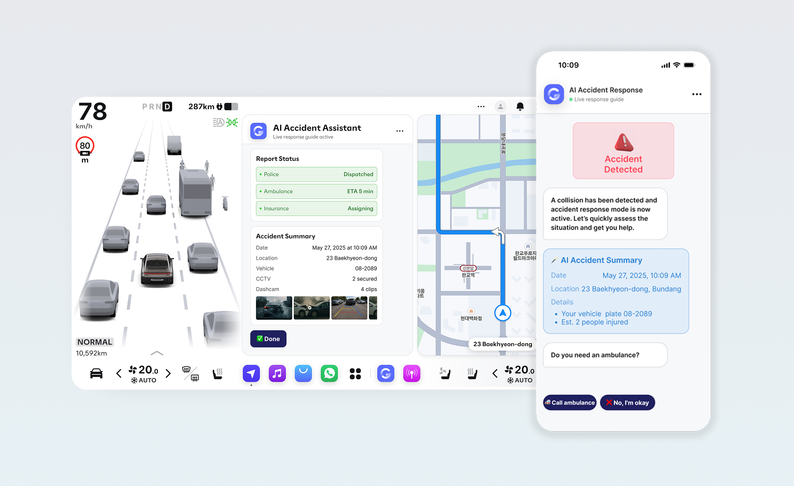
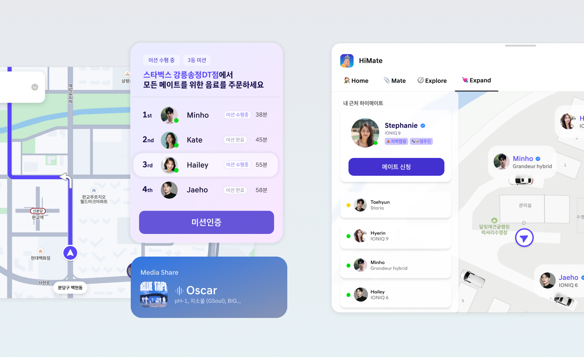
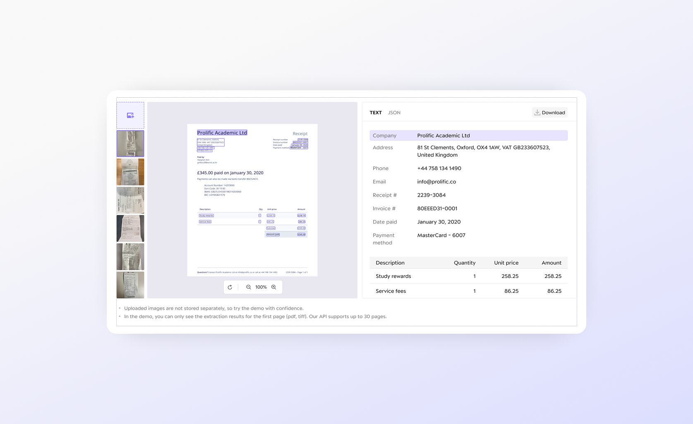
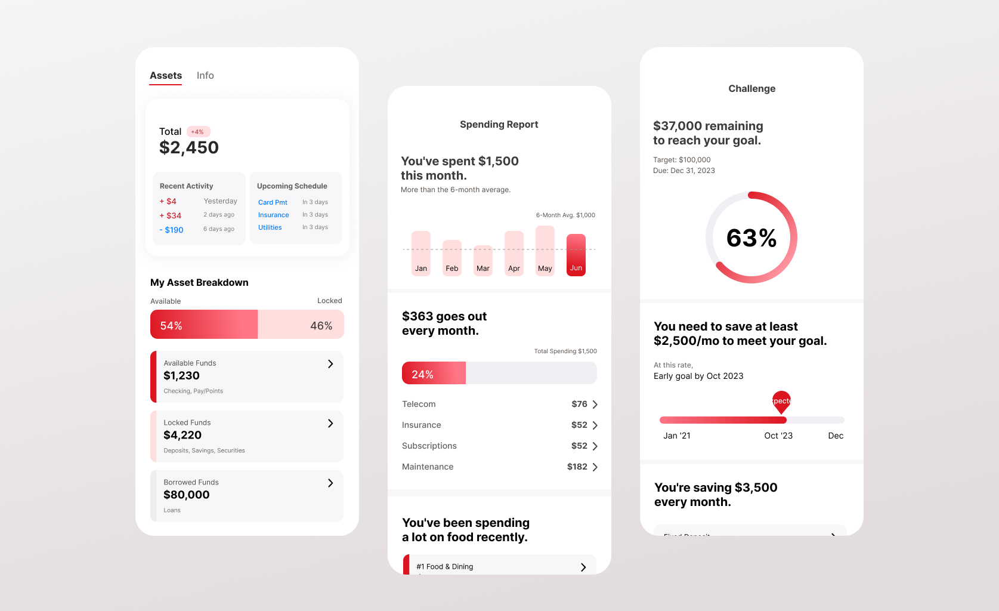
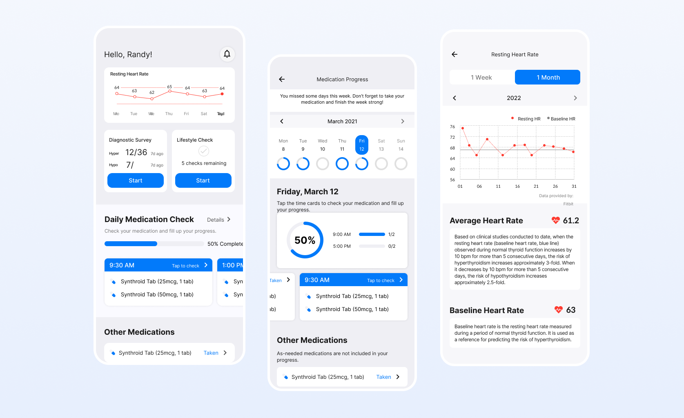
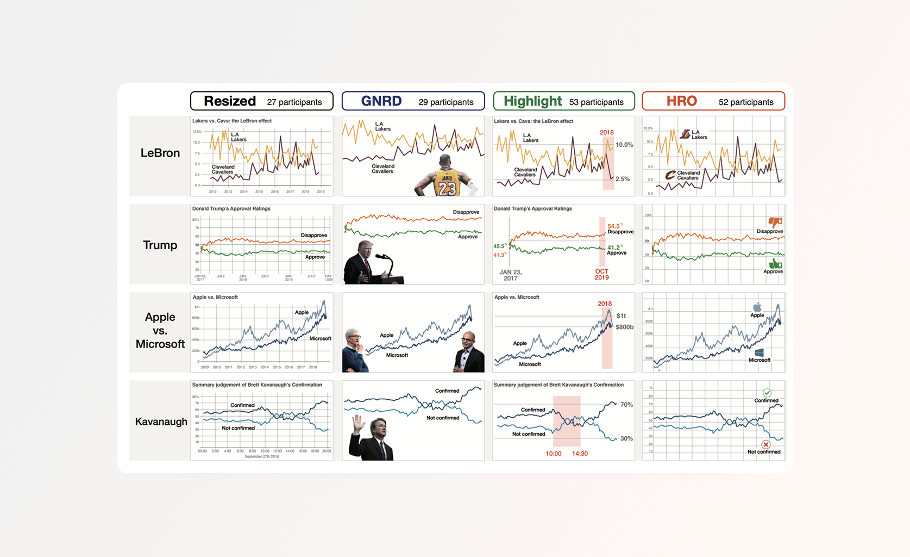

Professional Summary
Product Designer & Analyst with a dual background in Computer Science (M.S.) and Industrial Design, offering 6+ years of experience integrating user research, data analytics, and product strategy. Uniquely positioned to translate complex behavioral data into actionable UX solutions, utilizing SQL, Python, and funnel analytics to scale B2B platforms and drive user conversion rates. Recognized for architecting internal data dashboards and leading empirical user experiments that empower cross-functional teams to make evidence-based product decisions.
My Multidisciplinary Journey
An interactive map of my career timeline — each stop's ring is divided among the kinds of output it produced (patents, publications, awards, case studies), in that fixed order. Select a stop to see a summary of each below, with links to view the full detail.
- Patents
- Publications
- Awards
- Case Studies
Industrial Design — UNIST · 2014–2019
Computer Science — UNIST · 2019–2021
Product Designer (Healthcare) — Thyroscope · 2020–2022
Product Designer (Bank) — BNK Kyungnam Bank · 2022
Product Designer (IDP) — Upstage INC. · 2023–2024
Product Designer (Mobility) — Hyundai Motor Company · 2024–Present
Projects






Employment
Led empirical post-crash multimodal-interface research (co-filed USPTO patent PAT-5, AutomotiveUI 2025 publication A-2) and built an internal UX analytics dashboard that cut analysis time by over 99% (Excellence Award, 2026).
Designed and launched a GUI-based Intelligent Document Processing (IDP) API demo, converting 40.47% of homepage traffic into active trial users.
Formulated data-informed UX strategies for the MyData asset management platform, redesigning the product exploration journey around generational asset management patterns to reduce cognitive load.
Increased user sign-up conversion by 18.6% (28.1% → 46.7%) via Google Analytics funnel analysis, and led an end-to-end redesign of the predictive healthcare app informed by 5 interviews and a 57-user survey.
Education
- Research Topic: Human-Computer Interaction, Visualization Thumbnails | Advisor: Sungahn Ko
- [Quantitative HCI Research] Engineered large-scale user experiments (n=161) to evaluate cognitive load in data visualizations, utilizing Thurstonian modeling and A/B testing for statistical validation, resulting in 4 peer-reviewed publications in top-tier international venues (including IEEE TVCG and IEEE VIS) J-1, J-2, C-1, C-2.
- [Technology Commercialization] Patented and successfully transferred a novel data-driven thumbnail generation algorithm to the commercial industry PAT-1.
- [UX Engineering & Applied Research] Designed and developed a mental health screening system for university freshmen (Funded Project), bridging qualitative user needs with functional software architecture.
Patents
Registered Patents & Technology Transfer
PAT-3 A Method, an Imaging Device and a Recording Medium for Acquiring a Lateral Image for Eye Protrusion Analysis
PAT-2 A Method for Guiding a Visit to a Hospital for Treatment of Active Thyroid-Associated Ophthalmopathy and Performing the Same
PAT-1 Method and apparatus for generating thumbnail images
Pending Patent Applications
PAT-7 Method and Apparatus for Route Management and Vehicle Interlocking Control to Support Scheduled Departure
PAT-6 Method and Apparatus for Visualizing Destination Reachability Based on Electric Vehicle Battery Information During Route Search
PAT-5 Method for Providing Guide for Managing Accident and Vehicle Implementing the Same
PAT-4 Multimodal Route Guidance System
Publications
Peer-Reviewed Journal Articles
J-2 Towards visualization thumbnail designs that entice reading data-driven articles
J-1 HisVA: A visual analytics system for studying history
Top-Tier Conference Proceedings
C-2 Wait, let's think about your purchase again: A study on interventions for supporting self-controlled online purchases
C-1 Thumbnails for data stories: A survey of current practices
Archived / Poster Papers
A-2 Post-Crash UX: An Empirical Study on Multi-modal Interfaces for Immediate Driver Response
A-1 An Empirical Study on the Relationship Between the Number of Coordinated Views and Visual Analysis
Awards & Recognitions
- 2026: Excellence Award, Corporate Safety & Quality Innovation Contest, Hyundai Motor Company. Recognized for developing an advanced app-user behavior data visualization tool that optimizes corporate decision-making.
- 2025: Honorable Mention, Corporate Future Mobility Idea Contest, Hyundai Motor Company. Awarded for proposing a novel in-vehicle infotainment (IVI) system concept to support group driving and social interaction in autonomous vehicles.
- 2022: International Design Award Finalist, Red Dot Design Award & IDEA Design Award (Thyroscope Inc.). Shortlisted globally for architecting the UX concept of a predictive digital healthcare solution for thyroid disease.
- 2019-2021: Graduate Research & Teaching Assistantship Fellowship, UNIST. Awarded full tuition fellowship and monthly stipends for outstanding academic research and teaching contributions in the HCI & Visualization Lab.
- 2014-2019: National Scholarship for Science and Engineering, Korea Student Aid Foundation. Awarded full tuition and academic grants funded by the South Korean Government for top-performing STEM talents.
Professional Service & Media
- Invited Reviewer: IEEE Visualization Conference (IEEE VIS), Jul. 2020. Evaluated an academic manuscript for the top-tier international conference, demonstrating recognized expertise in Information Visualization.
- Presenter: IEEE VIS (Melbourne, Australia), Oct 2023 Youtube; IEEE VIS (Vancouver, Canada), Oct 2019.
- Invited Speaker: Woowa Bros (Delivery Hero) Tech Session, "Falling in Love with the Process of Writing, Twice", 2023 Youtube.
- Press: Featured Article, "Thyroscope Shortlisted as a Finalist for Both Red Dot and IDEA International Design Awards", The Korea Economic Daily (2022) Link.